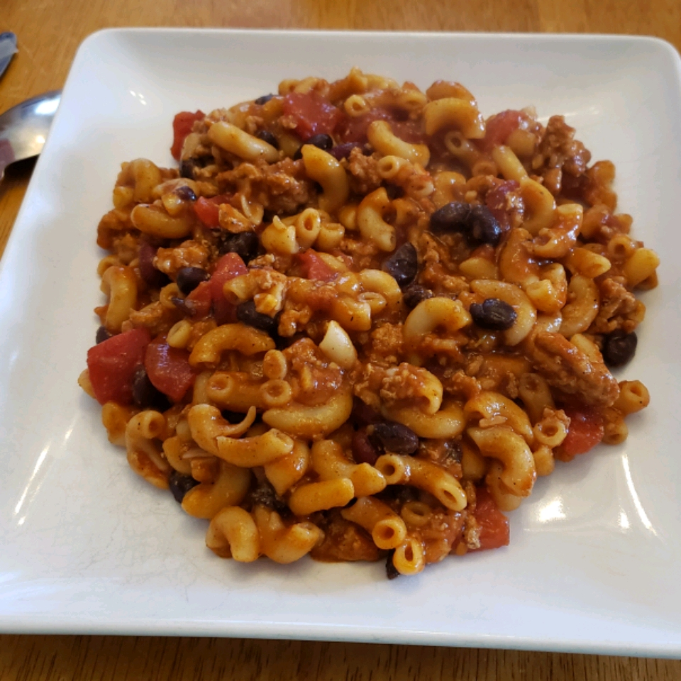

This is a hearty meal, there are no hard and fast rules to it, I often enjoy adding more types of beans, tomatoes, and olives as well. Feel free to use any style of noodle, or even put on a bun.

Ingredients
1 pound lean ground beef
1 can chili beans (kidney beans in chili sauce)
1 can kidney beans
1 can rotel diced tomatoes
1 large can of spaghetti sauce
1/2 box noddles
Salt & Pepper to taste
Steps
Bring a pot of water to boil, consult the noodle box for appropriate cooking times.
In large pot over medium heat, brown the ground beef.
Drain the liquid if you prefer.
Stir in the chili beans, kidney beans, and spaghetti sauce.
Simmer for 15 minutes.
Stir in the diced tomatoes.
Simmer an additional 15 minutes.
Add salt and pepper to taste.
Mix in the noodles to your desired consistency and enjoy!